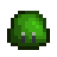

Babas
| Babas | |
 | |
| Información | |
| Aparece en: | Las minas |
| Niveles: | 1-120 |
| Matable: | Si |
| PV base: | Varía |
| Daño base: | Varía |
| Defensa base: | Varía |
| Velocidad: | 2 |
| Puntos de XP: | Varía |
| Variaciones: | Varias |
| Botín: |
Si se alcanzó el fondo de las minas:
|
- Este artículo es sobre el monstruo. Para el botín, mira Baba.
Las Babas son enemigos que pueden ser encontradas en varias ubicaciones, incluyendo Las minas y el Bosque secreto. Ellos aparecen en cinco diferentes variedades, todos están basados en el mismo "sprite" y código (una tonalidad verde es agregada al "sprite" gris, mostrado en el retrato). Necesitas matar 1000 babas de cualquier color para la "Erradicación de monstruos". Todas las babas en el juego cuenta para este objetivo (por ejemplo, las babas del Bosque secreto).
Las babas puede ser criadas en Criaderos de babas, o afuera, usando una Incubadora de babas.
Cada color de baba tiene un conjunto de estadísticas único.
Ataques
Las babas atacan de dos maneras. Algunas pueden rebotar lentamente hacia ti, y otras "cargan" para saltar hacia ti desde una distancia. La animación de carga de la baba hace que tenga una forma casi plana en el suelo. Si hay un obstáculo en su camino, su carga de salto hará que reboten fuera del objeto (múltiples veces si están en un lugar apretado). Ocasionalmente, las babas entrarán en un estado de rabia después de que hayan sido atacadas, haciendo que éstas se muevan significativamente rápidas y tengas los ojos rojos.
| Imagen | Nombre | Efecto | Causa | Duración |
|---|---|---|---|---|
| Pringue de baba | Ser atacado por una baba. |
Estrategia
Cuando una baba es atacada, será noqueada por una corta distancia, fuera del rango de las armas de corto alcance. La mejor estrategia para matar babas es rápidamente acercarte a ellas después de atacarlas, para prevenir que carguen para atacarte, y acordonarlas hacia una pared o una esquina (de paredes, rocas, o los dos). Sus dos tipos de ataques pueden ser esquivados usando un movimiento defensivo (como el bloquea de una arma regular). Usar el bloqueo en el momento adecuado puede bloquear una buena cantidad de daño. De lo contrario, ser ofensivo puede ser la mejor defensa.
El Anillo encantababas previene todo el daño recibido de las babas. Este anillo es obtenido como recompensa por matar 1000 babas para la "Erradicación de monstruos".
Babas machos
Todas las babas tienen una probabilidad de 49% de ser macho y retendrá sus propiedades originales, como el de ser especial. Las babas machos tienen una cola, 25% más de puntos de vida sobre su vida base, y un punto más de daño. Cuando están pasivas y son atacadas, las babas machos tienen una probabilidad de 2.5% de incrementar su daño en 50% y hacer una animación temblorosa.
Apareamiento
En un Criadero de babas o (menos comúnmente) en Las minas, el Bosque secreto, la Caverna Calavera, en la Arbolada de Babas tigres, o la Mina de cantera, las babas machos y hembras pueden aparearse para producir una pequeña baba que con el tiempo se convertirá en una baba adulta macho o hembra.
Resultados de color de apareamiento
El juego genera una selección aleatoria de la siguiente tabla. Cada uno de los componentes del color rojo, verde y azul de la baba se calcula independientemente de los otros colores utilizando los valores de las babas principales. La elección más probable tiene una probabilidad aleatoria de dos resultados por componente de color, también calculado independientemente de los otros componentes. [1]
| Probabilidad | Cada componente de color (Rojo, Verde o Azul) |
|---|---|
| 25% | Componente de baba macho +/- 25% aleatorio |
| 25% | Componente de baba hembra +/- 25% aleatorio |
| 50% | 50%: Máximo de (Componente de baba macho y Componente de baba hembra) 50%: Promedio de (Componente de baba macho y Componente de baba hembra) |
Variaciones
Nota: Una vez que se ha construido una Incubadora de babas en La Granja, cualquier baba de color verde, azul, roja, morada o baba tigre que se encuentre en cualquier lugar puede soltar de botín un Huevo de baba. [2]
| Baba verde | |||||||
|---|---|---|---|---|---|---|---|
| PV | Daño | Defensa | Velocidad | XP | Ubicación | Botín [3] | |
| 24 | 5 | 1 | 2 | 3 |
|
||
| Baba azul | |||||||
| PV | Daño | Defensa | Velocidad | XP | Ubicación | Botín [3] | |
| 106 | 7 | 0 | 2 | 6 |
|
Huevo de baba azul (1%, Solo si el Criadero de babas fue construido) | |
| Notas: | Cada ataque aumenta ligeramente la posibilidad de comenzar a brillar y aumentar su velocidad por 2 | ||||||
| Baba roja | |||||||
| PV | Daño | Defensa | Velocidad | XP | Ubicación | Botín [3] | |
| 205 | 16 | 0 | 2 | 10 |
|
||
| Baba lila | |||||||
| PV | Daño | Defensa | Velocidad | XP | Ubicación | Botín [3] | |
| 410 | 16 | 0 | 2 | 10 |
|
||
| Notas: | Estas son babas poderosas y son encontradas en la Caverna Calavera. | ||||||
| Baba amarilla | |||||||
| PV | Daño | Defensa | Velocidad | XP | Ubicación | Botín [3] | |
| 3 × Baba original | 2 × Baba original | Varía | 2 | Varía | Botín de babas normales Botín basado en el color (consulte la tabla a continuación) | ||
| Notas: | 0.1% de probabilidad de cambiar el color de cualquier baba (incluidos las especiales y las babas machos), mantendrá todas las propiedades de la baba original, excepto los PV y el Daño. | ||||||
| Baba negra | |||||||
| PV | Daño | Defensa | Velocidad | XP | Ubicación | Botín [3] | |
| Varía | Varía | Varía | 2 | Varía | Botín de babas normales Botín basado en el color (consulte la tabla a continuación) | ||
| Notas: | En un evento aleatorio después de que duermas, una Bruja volará sobre tu Criadero de babas, ella convertirá tus babas que están dentro, en Babas negras. Estas babas se quedan con las propiedades y estadísticas originales de las anteriores. | ||||||
| Baba cobre | |||||||
| PV | Daño | Defensa | Velocidad | XP | Ubicación | Botín [3] | |
| 102 | 16 | 0 | 4 | 10 |
|
||
| Baba hierro | |||||||
| PV | Daño | Defensa | Velocidad | XP | Ubicación | Botín [3] | |
| 205 | 16 | 0 | 1 | 10 |
|
||
| Baba tigre | |||||||
| PV | Daño | Defensa | Velocidad | XP | Ubicación | Botín [3] | |
| 415 | 23 | 0 | 2 | 20 | |||
Babas especiales
Las babas especiales tiene una pequeña probabilidad de reemplazar a la baba normal. Ellas pueden ser identificadas por su antena con una pequeña estrella.
Las babas especiales tienen 3 veces más puntos de vida que las babas normales, y harán el doble de daño por ataque. Ellos pueden soltar Objetos especiales.
| Baba verde (especial) | |||||||
|---|---|---|---|---|---|---|---|
| PV | Daño | Defensa | Velocidad | XP | Ubicación | Botín | |
| 72 | 10 | 1 | 2 | 3 | Las minas (Pisos 1-40) |
| |
| Notas: | 0.175% de probabilidad de reemplazar una baba entre los pisos 1-40. [4] | ||||||
| Baba verde oscura (especial) | |||||||
| PV | Daño | Defensa | Velocidad | XP | Ubicación | Botín | |
| 72 | 10 | 1 | 2 | 3 | Las minas (Pisos 2-39) |
| |
| Notas: | 1% de probabilidad de reemplazar una baba entre los pisos 2-39, excluyendo los pisos 0, 1, 5 y 6. [5] | ||||||
| Baba azul (especial) | |||||||
| PV | Daño | Defensa | Velocidad | XP | Ubicación | Botín | |
| 318 | 14 | 0 | 2 | 6 | Las minas (Pisos 40-80) |
| |
| Notas: | 0.175% de probabilidad de reemplazar una baba entre los pisos 40-80. [4] | ||||||
| Baba negra/Baba transparente (especial) | |||||||
| PV | Daño | Defensa | Velocidad | XP | Ubicación | Botín | |
| Varía | Varía | 0 | 2 | Varía | Las minas (Pisos 42-79) |
| |
| Notas: | 1% de probabilidad de reemplazar una baba entre los pisos 42-79. excluyendo los pisos 0, 1, 5 y 6. [5] | ||||||
| Baba roja (especial) | |||||||
| PV | Daño | Defensa | Velocidad | XP | Ubicación | Botín | |
| 615 | 32 | 0 | 2 | 10 | Las minas (Pisos 80-120) |
| |
| Notas: | 0.175% de probabilidad de reemplazar una baba entre los pisos 80-120. [4] | ||||||
| Baba lila (especial) | |||||||
| PV | Daño | Defensa | Velocidad | XP | Ubicación | Botín | |
| 1230 | 32 | 0 | 2 | 10 | Las minas (Pisos 82-119) |
| |
| Notas: | 0.175% de probabilidad de reemplazar cualquier Baba lila[4] | ||||||
| Baba cobre (especial) | |||||||
| PV | Daño | Defensa | Velocidad | XP | Ubicación | Botín | |
| 306 | 32 | 0 | 4 | 10 | Mina de cantera, Pisos aleatorios de Las minas |
| |
| Notas: | 0.175% de probabilidad de reemplazar cualquier Baba cobre. [4] | ||||||
| Baba hierro (especial) | |||||||
| PV | Daño | Defensa | Velocidad | XP | Ubicación | Botín | |
| 615 | 32 | 0 | 1 | 10 | Mina de cantera, Pisos aleatorios de Las minas |
| |
| Notas: | 0.175% de probabilidad de reemplazar cualquier Baba hierro. [4] | ||||||
Babas grandes
La Babas grandes tienen un comportamiento de ataque similar al de las babas normales. Cuando mueren, tienen un 75% de posibilidades de dividirse de 2 a 4 babas más pequeñas que atacarán al jugador. Esas pequeñas babas dan XP como lo hacen las babas normales anteriores. Las Babas grandes que son más comunes son la Baba lila grande en la Caverna Calavera. También pueden aparecer en suelos infestados de babas en Las minas en el color de ese piso de las minas. [6]
Durante la misión "Invasión en Caverna Calavera" La Baba lila grande, en la Caverna Calavera puede soltar una Gema Qi (10% de probabilidad) o una Alma galáctica (0.45% de probabilidad). Durante la misión "El desafío hambriento de Qi" La Baba lila grande, en la Caverna Calavera puede soltar un corazón que cura 10 puntos de vida.
| Color | PV | Daño | Defensa | Velocidad | XP | Ubicación | Botín | Botín especial |
|---|---|---|---|---|---|---|---|---|
| 60 | 6 | 0 | 2 | 7 | Las minas |
|
||
| 120 | 5 | 0 | 2 | 14 | ||||
| 180 | 10 | 0 | 2 | 21 | ||||
| 240 | 15 | 0 | 2 | 21 | Caverna Calavera |
Baba prismática
La Baba prismática es un monstruo especial que se puede encontrar en Las minas, Mina de cantera o la Caverna Calavera en cualquier piso, después de aceptar la misión especial de Rasmodius ("Gelatina prismática"). Parece una baba normal que cambia de color con el tiempo. La Baba prismática puede aparecer cuando las minas están en un estado "peligroso" o normal. Una Baba prismática siempre soltará la Gelatina prismática que se debe entregar al mago para completar la misión especial. Mientras la misión especial está activa, cada baba generada en Las minas, Mina de cantera o la Caverna Calavera tiene alrededor de un 1,2% de probabilidad de ser reemplazado por una Baba prismática, dependiendo de la suerte diaria. La probabilidad exacta es 0.012 + Suerte diaria / 10.0 [4].
Hay que tener en cuenta que una Baba prismática tiene 1000 de PV y 35 de Daño por lo tanto, es considerablemente más fuerte que la baba a la que remplaza.
Babas peligrosas
Las Babas peligrosas son una variación que se puede encontrar en Las minas o la Caverna Calavera en cualquier piso después de aceptar la misión "Peligro en las profundidades" o la misión "Invasión en Caverna Calavera", o luego de activar el Altar del desafío. Remplazan a las babas normales y aparecen como una baba más grande con gafas de sol y una sonrisa. Son relativamente más fuertes que sus variaciones normales, con el doble de PV y Daño. A veces, estas babas aparecerán apilados uno encima del otro. Esta variación se llama Baba apilada. Cuando se golpea con un arma, la baba superior saldrá volando de forma similar a un proyectil del Niño calamar. Después de eliminar todas las babas, la de abajo funciona como una baba normal.
Botín basado en el color
Aparte del botín listado más arriba, cada variación de la baba es aleatoria y puede dejar caer botín adicional dependiendo del color adaptado. [2]
Los grupos de colores son mutuamente excluyentes y se enumeran en el orden en que el juego los prueba. (Por ejemplo, una baba puede caer en las categorías Blanco y Gris, pero el Blanco se prueba primero, por lo que la baba soltará Mena de hierro y no Piedra)
La columna "Valores RGB" muestra el rango de colores que puede ser una baba para soltar un ítem.
| Color | Valores RGB | Botín |
|---|---|---|
| Negro | Rojo < 80, Verde < 80, Azul < 80 | |
| Amarillo | Rojo > 200, Verde > 180, Azul < 50 | |
| Rojo | Rojo > 220, Verde > 90 y < 150, Azul < 50 | |
| Blanco | Rojo > 230, Verde > 230, Azul > 230 | |
| Gris | Rojo > 150, Verde > 150, Azul > 150 | |
| Lila | Rojo > 150, Verde < 50, Azul > 180 |
Referencias
- ↑ Mirar GreenSlime::mateWith en el código del juego.
- ↑ 2,0 2,1 Mirar StardewValley.Monsters.GreenSlime::getExtraDropItems en el código del juego.
- ↑ 3,0 3,1 3,2 3,3 3,4 3,5 3,6 3,7 3,8 La mayoría del botín de las babas se especifican en el archivo de datos Content\Data\Monsters.xnb. La posibilidad de que una baba lila suelte lingotes/menas de iridio se establece en la construcción de GreenSlime en el código del juego. La posibilidad de que una baba cobre/hierro suelte menas se establece en StardewValley.Locations.MineShaft::getMonsterForThisLevel.
- ↑ 4,0 4,1 4,2 4,3 4,4 4,5 4,6 Mirar MineShaft::populateLevel en el código del juego.
- ↑ 5,0 5,1 Mirar GreenSlime en construcción de StardewValley.Monsters.
- ↑ 6,0 6,1 Mirar la construcción de BigSlime en el código del juego.
Historial
- 1.0: Introducido.
- 1.4: Babas de cobre y hierro introducidas.
- 1.5: Babas tigre y prismática introducidas, las babas del Bosque secreto ahora sueltan Semilla de caoba, las condiciones para que las babas blancas suelten Diamante han cambiado.
- 1.5.3: Se hizo que las babas prismáticas fueran un poco más comunes (1/125 de probabilidad a 1/83 de probabilidad) y también hizo que la Suerte modificara las posibilidades de encontrarlos. Se corrigió un error que impedía que la baba prismática no soltara Gelatina prismática en casos raros.
| Animales y Productos | |
|---|---|
| Corral | Conejo (Lana • Pata de conejo) • Dinosaurio (Huevo de dinosaurio) • Gallina (Huevo • Huevo XXL • Huevo Marrón • Huevo Marrón XXL) • Gallina dorada (Huevo dorado)• Gallina sombría (Huevo sombrío) • Pato (Huevo de pato • Pluma de pato) |
| Establo | Avestruz (Huevo de avestruz) • Cabra (Leche de cabra • Leche de cabra XXL) • Cerdo (Trufa) • Oveja (Lana) • Vaca (Leche • Leche XXL) |
| Estanque de peces | Pescados (Huevas) |
| Criadero de babas | Babas (Baba • Bola de baba • Huevo de baba) |
| Otros | Caballo • Gato • Perro |